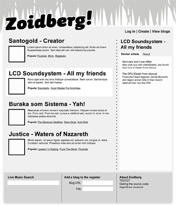

Project proposal
Several services exist today that track peoples listening habbits and current trends in popular music. For example Last.fm (utilizing audioscrobbler.ws) and specialized blog syndicalizer The Hype Machine. I propose a somewhat different approach, by mashing up the concepts of these two services and mixing in concepts made popular by sites such as Digg, Reddit and Techmeme.
Current popular music will be presented to the user in a straight forward way, much like reddit.com. This music will be collected by scraping the feeds of several popular blogs in an automated fashion. Ranking of the music will depend on several factors, i.e. the blogs popularity as measured by a specialized page rank algorithm, the tracks popularity and velocity and, given that the user is logged in, a weight based on matching of previous user choices with other users selections (I.e. in the Amazon “Other customers who bought this…” sense).
To aid in the selection of tracks for a user, the system will employ Last.fm data to get another source for similarity ratings. In the event that the user has previously established a Last.fm account, the system will use this data to get a sense of the users previous listening habbits.
Feature run-down
There are of course several features behind the scenes that will provide an interesting challenge, such as implementing page rank (both the mathematics and the scraping of html to gather the link graph), parsing feeds and calculating measures such as SVD, but from an interaction standpoint, these are the main features of the service:
- There shall be a listing of popular tracks syndicalized from blogs.
- The user shall be able to reorganize this list, preferably drag and drop enabled.
- The user shall be able to create an account and log in.
- There should be live search of tracks in the database.
- Users should be able to add blogs and view the current listings.
- The user should be able to explore similar music in a highly interactive way.
- The user should be able to acquire more meta data regarding the artist.
- The current datafeed for any user should be available in the Atom format.